Help Center
Everything you need to know about using LogHound.
Paste the prompt below into ChatGPT, Gemini, or Claude to get an AI assistant that knows LogHound inside and out — ready to answer your specific questions.
Please load the LogHound app documentation from the following URL and use it as context to answer my questions about the app: https://loghound.app/loghound-reference.txt Once you've read it, act as a helpful LogHound support assistant. I may ask questions about how to use the app, what features are available, how to set up logs and fields, how alerts work, how to export data, or anything else related to LogHound. Please give clear, friendly answers based on that documentation.
Getting Started
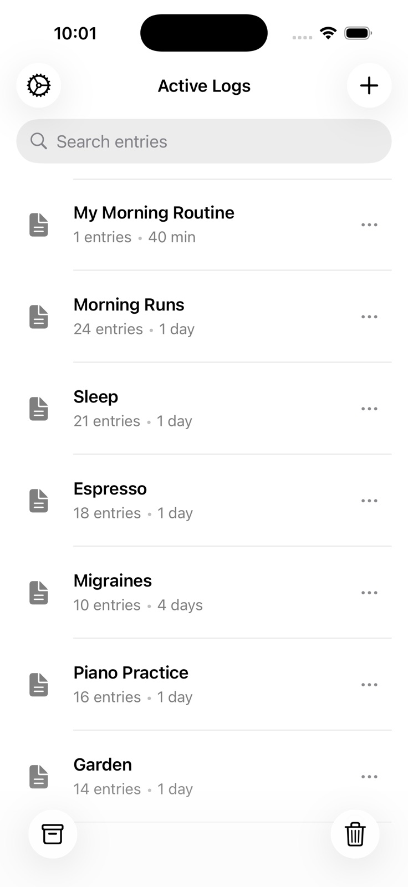
When you open LogHound for the first time, you'll see a welcome screen. You can create your first log right away by tapping Create Your First Log, or skip to explore the app first.
Sample data is pre-populated so you can see how logs, fields, and entries work before creating your own. Feel free to edit or delete the sample data at any time.
The home screen shows your log list with a search bar at the top. Each log displays its name and entry count.
Along the bottom toolbar you'll find:
- + button — Create a new log
- Archive — View archived logs
- Trash — View deleted logs (30-day retention)
In the top-right area you'll see a Settings gear icon and an Alerts bell icon for managing notifications.
Tap any log to open its detail view where you can see all entries. Use All Logs (back button) to return to the log list.
Inside a log, you can switch between three view modes:
- Card — Vertical cards showing field values
- Table — Spreadsheet-style rows and columns
- Summary — Aggregated statistics for numeric fields
Logs
Tap the + button on the home screen to create a new log. Enter a name and tap Save.
The schema editor opens automatically so you can start adding fields right away. Fields define what data each entry will capture.
Long-press a log on the home screen and select Rename. Edit the name and confirm. Duplicate names are not allowed.
Long-press a log and select Duplicate. You'll be prompted to name the copy and can toggle Include all entries on or off.
If toggled on, all existing entries are copied to the new log. If off, only the schema (fields) is duplicated.
Archiving preserves a log and removes it from the home screen. You can access archived logs from the Archive view and restore them anytime.
Deleting moves a log to Trash where it stays for 30 days before permanent deletion. Both actions are fully reversible within their retention periods.
Open the Archive or Trash view and tap the restore action on the log you want to bring back.
If an active log already has the same name, you'll be prompted to rename it before restoring.
On the home screen, drag logs up or down to rearrange them in your preferred order. The order is saved automatically.
Fields & Schema
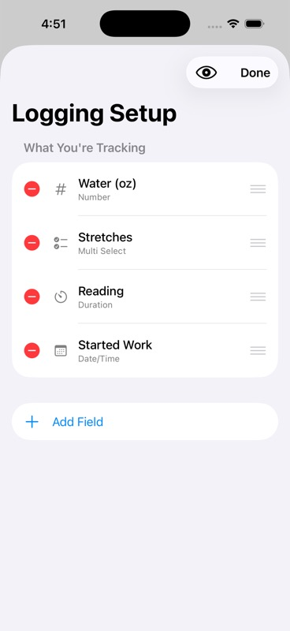
In the schema editor, tap Add Field. Select a field type, configure its settings (name, options, etc.), and tap Save.
Each field defines a piece of data captured in every entry. You can add as many fields as you need.
Text
Free-form text input. Use for notes, descriptions, names, or any open-ended data.
Number
Numeric input with optional decimal places. You can set minimum and maximum values to constrain input.
Toggle
A simple Yes/No switch. Great for habit tracking, checklists, or any binary data.
Single Select
Pick one option from a list you define. Useful for categories, statuses, or any fixed set of choices.
Multi Select
Pick multiple options from a list. Good for tagging entries with several attributes at once.
Date/Time
A date picker, time picker, or both. This is the only field type that supports alerts and reminders.
Star Rating
A 1–5 scale with a customizable emoji. Rate meals, mood, workouts, or anything on a quick scale.
Location
Captures your GPS coordinates (latitude and longitude). Optionally includes altitude and accuracy data.
Tap a field in the schema editor to edit its name and configuration. Changes apply to all future entries.
If existing entries already have data for this field, a warning is shown to let you know how the change might affect your data.
Use the drag handles in the schema editor to reorder fields. The field order determines how they appear in entry forms and views.
Swipe left on a field in the schema editor to delete it. A confirmation dialog shows how many entries have data in this field so you understand the impact before confirming.
Every field type shares these common options:
- Required — The field must be filled before an entry can be saved
- Clonable — When duplicating an entry, this field's value auto-fills in the copy
- Default value — Pre-fills the field when creating a new entry
Type-specific options include:
- Number — Min/max values, decimal places
- Single/Multi Select — Manage the list of selectable options
- Star Rating — Custom emoji and maximum rating value
- Date/Time — Picker mode (date only, time only, or both)
- Location — Toggle altitude and accuracy capture
Entries
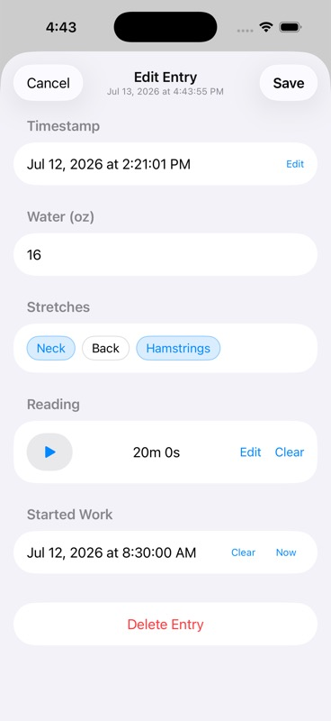
Tap the + floating action button in the log detail view. The timestamp is set automatically to the current date and time but can be edited.
Fill in your fields and tap Save. Required fields must be completed before saving.
Tap an entry to view its details, then tap the Edit button. Modify any fields and save your changes.
Tap an entry and select Duplicate. Fields marked as Clonable in the schema are pre-filled with the original values; other fields start empty.
You can edit the duplicated entry before saving it.
Delete individual entries via edit mode or the context menu. To delete all entries in a log at once, use the "..." menu in the log detail view and select Delete All Entries.
If you dismiss the entry form without saving, your in-progress data is automatically saved as a draft. When you return to create a new entry in the same log, the draft is restored so you can pick up where you left off.
Drafts are cleared once you save the entry.
Viewing Data
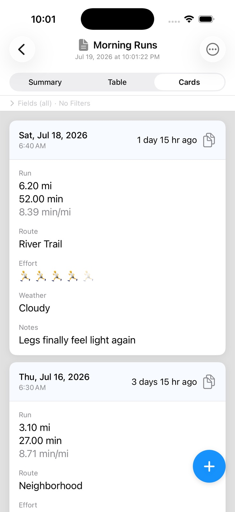
Card view
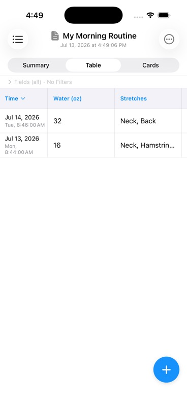
Table view
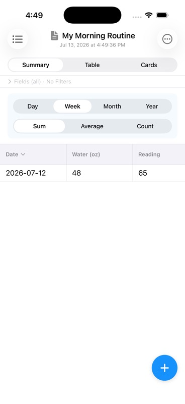
Summary — Sum/Week
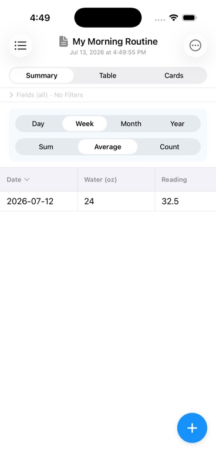
Summary — Average/Week
Card view displays entries as vertical cards, newest first. Each card shows the timestamp and field values, along with Edit, Duplicate, and Delete buttons.
You can toggle which fields are displayed on the cards to focus on the data that matters most.
Table view shows entries as rows with fields as columns. Click column headers to sort by that field. Drag column borders to resize.
Tap a row to see full entry details. Right-click (or long-press) a row for Edit, Duplicate, and Delete options.
Numeric precision (decimal places displayed) is configurable in Settings.
Summary view aggregates your numeric data over time. Only Number, Star Rating, and Toggle fields appear as columns — text, select, and location fields are excluded since they can't be meaningfully aggregated.
Use the two pickers at the top to control what you see:
- Interval (Day / Week / Month / Year) — groups entries into time buckets. "Week of Mar 15" shows all entries recorded that week.
- Statistic (Sum / Average / Count) — determines how values within each bucket are combined. Sum adds them up; Average divides by the number of entries; Count just shows how many entries there were regardless of field values.
For example, a running log on Sum + Week shows total distance run each week (15.2 miles). Switch to Average + Week and the same data shows average distance per run (5.1 miles). Same entries, completely different insight.
Tap any column header to sort by that value. Use the Fields button to show or hide individual columns.
The week start day (Sunday or Monday) is configurable in Settings.
Search & Filters
Use the search bar in the log list to find entries across all logs. Search uses fuzzy matching against log names and entry field content.
Results display the log name, entry timestamp, and highlighted matches. Tap a result to navigate directly to that entry.
Tap the Filter button in any view mode to open the filter panel. Filters are shown as expandable cards, one per field.
Each field type offers relevant operators: equals, contains, between, is set, and more. Filters are per-log and reusable across sessions.
Toggle individual filters on or off. When filters are active, the view shows a count indicator (e.g., "5 of 12 entries") so you know how many entries match.
Use Clear All to remove all active filters at once.
Alerts & Reminders
How alerts work: Alerts are tied to a specific date and time stored in a Date/Time field. When that moment arrives, iOS sends you a notification. Tap the notification to open the entry directly. Alerts are configured per-entry — the same field in different entries can have different alert settings.
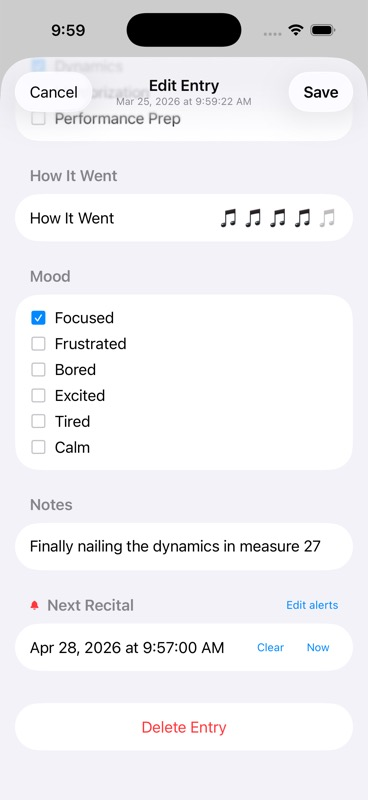
Active alert on a field
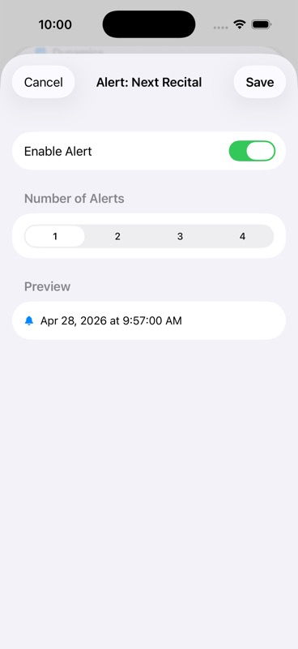
Alert config (1 alert)
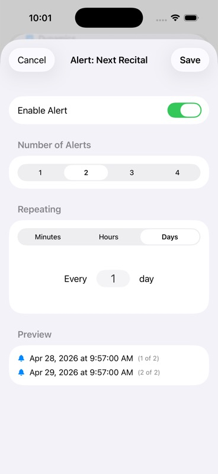
Multiple alerts with repeat
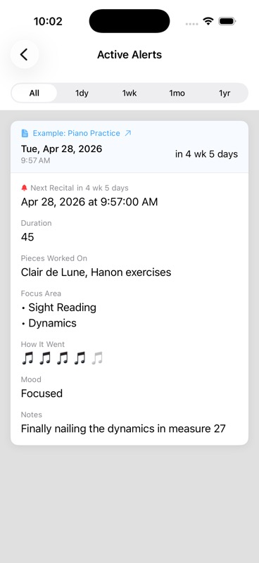
Alerts list
Alerts are only available on Date/Time fields. If your log doesn't already have one, open the schema editor ("..." menu → Edit Fields) and add a Date/Time field — for example, "Next appointment", "Due date", or "Next Recital".
Choose the picker mode that fits: Date only, Time only, or Date & Time. For alerts, you'll want Date & Time so the notification fires at a precise moment.
When creating or editing an entry, set your Date/Time field to a future date and time. Then tap Edit alerts (or the bell icon) next to the field.
In the alert sheet:
- Toggle Enable Alert on
- Choose Number of Alerts: 1, 2, 3, or 4
- If more than 1, set the Repeat interval: every N minutes (1–59), hours (1–23), or days (1)
- Check the Preview to confirm all scheduled times are correct
- Tap Save
The field shows a red bell icon in the entry form once an alert is active. You can tap Edit alerts at any time to modify or disable it.
⚠️ Alerts cannot be set for dates in the past. If you pick a past date, the alert option will be unavailable until you change the date to a future time.
From the log list, tap the bell icon in the top toolbar (it shows a badge count when alerts are active). This opens the Active Alerts view showing every scheduled alert across all your logs.
Use the time filter tabs to narrow the list:
- All — every upcoming alert
- 1dy — firing within the next 24 hours
- 1wk — firing within the next 7 days
- 1mo — firing within the next month
- 1yr — firing within the next year
Each card shows the log name, field name, scheduled date and time, and how far away it is (e.g. "in 4 wk 5 days"). Tap the log name arrow to navigate directly to that entry.
When an alert fires, iOS delivers a notification. Tapping it opens LogHound directly to the relevant entry.
The first time you save an alert, LogHound will ask for iOS notification permission. If you decline and later want alerts, go to iOS Settings → LogHound → Notifications and enable them.
Alerts are scheduled locally on your device — no internet connection is required for them to fire.
Export & Backup
Long-press a log on the home screen or use the "..." menu inside a log and select CSV Export.
The CSV file includes a header row with field names and one data row per entry. The iOS Share Sheet opens so you can save, email, AirDrop, or send the file wherever you need it.
Go to Settings and tap Backup Logs. Select the logs you want to include and tap Backup.
This creates a .loghound file containing all selected logs, their schemas, and entries. Save it via the Share Sheet.
Go to Settings and tap Restore Logs. Pick a .loghound file from your device or cloud storage.
If any log names conflict with existing logs, they are automatically renamed to avoid duplicates.
Both CSV exports and .loghound backups use the iOS Share Sheet. You can send files to:
- AirDrop (to nearby Apple devices)
- Email or Messages
- Files app (local or iCloud Drive)
- Any other app that accepts files
Settings
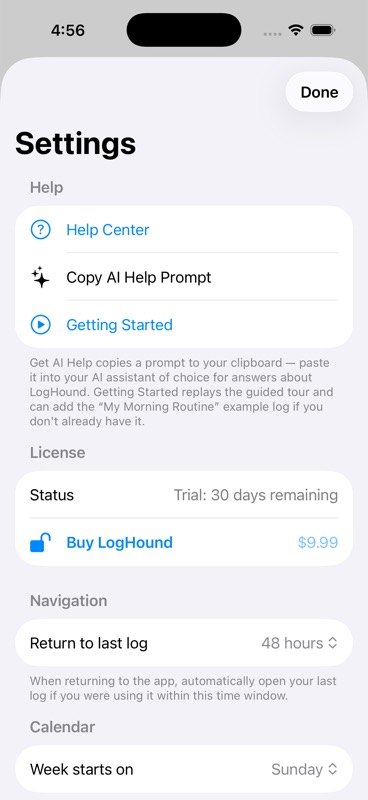
Controls whether LogHound automatically reopens your last-viewed log when you return to the app. Options: 5 minutes, 15 minutes, 1 hour, 1 day, or Never.
If you return within the selected window, the app opens directly to the log you were viewing. Otherwise, it starts at the home screen.
Choose whether weeks start on Sunday or Monday. This affects how weekly intervals are calculated in Summary view aggregations.
Set the number of decimal places (0–10) shown for numeric values in Table view. This is a display-only setting and does not affect stored data.
Trial & Purchase
LogHound includes a 30-day free trial with every feature fully unlocked. No credit card required — just download and start using the app.
After the trial expires, the app enters read-only mode. You can still:
- View all your logs and entries
- Access Settings
You will not be able to create, edit, export, backup, delete, or duplicate logs or entries until you purchase the app.
LogHound is a one-time purchase — no subscription, no recurring fees. Pay once and unlock every feature permanently.
If you reinstall LogHound or switch to a new device, tap Restore Purchases in Settings or on the paywall screen. This re-validates your purchase with the App Store and unlocks the app.
Troubleshooting
Check the Archive and Trash views first. Logs may have been archived (hidden from the home screen) rather than permanently deleted.
Deleted logs remain in Trash for 30 days and can be restored at any time during that period.
Open the iOS Settings app, scroll to LogHound, tap Notifications, and make sure notifications are enabled.
Also check that Allow Notifications is turned on, and that alerts, sounds, or banners are configured to your preference.
Tap Restore Purchases in Settings or on the paywall screen. This contacts the App Store to verify your purchase and unlock the app.
Make sure you're signed in with the same Apple ID you used for the original purchase.
- On your old device, go to Settings → Backup Logs and select all logs
- Save the .loghound file (via AirDrop, iCloud Drive, email, etc.)
- On your new device, install LogHound and go to Settings → Restore Logs
- Select the .loghound file to restore all your logs and entries
Don't forget to Restore Purchases on the new device as well.